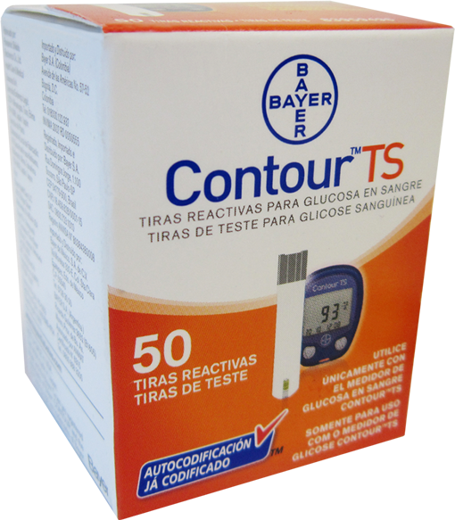

Contour™ ts Tiras Reactivas para Determinación de Glucosa en Sangre

DESCRIPCIÓN:
Tiras reactivas para determinación de glucosa en sangre total (capilar, venosa o arterial). Uso exclusivo con el medidor de glucosa en sangre Contour™ TS.
CARACTERÍSTICAS:
Están diseñadas para su uso exclusivo con Medidores de Glucosa en Sangre Contour™ TS. Para uso en consultorios médicos, clínicas y hospitales por personal profesional de la salud, y para su uso en el hogar por personas con o sin diabetes.
Las Tiras Reactivas Contour™ TS no traen códigos de ningún tipo, pues están listas para realizar determinaciones de glucosa en sangre con Medidores de Glucosa en Sangre Contour™ TS y obtener un resultado fácil, rápido, preciso y confiable en tan sólo 8 segundos y con una mínima cantidad de muestra de sangre.
PRINCIPIO DEL MÉTODO/DETERMINACIÓN:
Electroquímica.
A manera de resumen el proceso completo de la determinación es como sigue: una vez que la muestra de sangre es absorbida por capilaridad en la punta de la tira reactiva, la glucosa presente en la muestra de sangre reaccionará de manera específica con el complejo enzimático Glucosa Deshidrogenasa–Flavin Adenin Dinucleótido (GDH-FAD) presente en la tira reactiva. Al desarrollo de la reacción química existe un intercambio directamente proporcional entre la cantidad de glucosa en sangre en la muestra y la carga eléctrica que el sistema recibe, determinando así los niveles de glucosa en sangre de la muestra.
LIMITACIONES E INTERFERENCIAS:
- El sistema corrige o compensa automáticamente la posible interferencia por los niveles de hematócrito extremadamente bajos o altos (neonatos, embarazo, deshidratación, anemia, trastornos pulmonares) asegurando una adecuada precisión y exactitud en rangos de hematócrito de 0-70%.
- Corrige o compensa automáticamente la posible interferencia por los niveles de oxígeno en la sangre, asegurando una adecuada precisión y exactitud para pacientes en terapia intensiva o que se encuentren a diferentes niveles de altitud.
- Corrige o compensa automáticamente la posible interferencia por la presencia de medicamentos en niveles elevados como ácido ascórbico y paracetamol, o bien la presencia de sustancias propias del organismo humano presentes en concentraciones más allá de sus límites normales como bilirrubina, ácido úrico, colesterol, triglicéridos, etc.
- La tecnología de las tiras reactivas Contour™ TS reduce o minimiza la posible interferencia por la presencia de medicamentos o sustancias propias del organismo humano en niveles elevados arriba de los límites normales. En la siguiente tabla se exhibe una lista de estas sustancias en la que se incluye su concentración límite en la que no manifiestan interferencia:
|
Paracetamol |
2.0 mg/dL > 22 mg/dL |
|
Ácido ascórbico |
2.0 mg/dL > 36 mg/dL |
|
Ácido úrico |
7.0 mg/dL > 32 mg/dL |
|
Bilirrubina |
1.2 mg/dL > 20 mg/dL |
|
Colesterol |
200 mg/dL > 500 mg/dL |
|
Triglicéridos |
200 mg/dL > 3,000 mg/dL |
|
Maltosa |
No generan interferencia |
|
Galactosa |
|
|
Icodextrina |
ESPECIFICACIONES TÉCNICAS:
• No use las tiras reactivas si la fecha de caducidad indicada en la etiqueta del frasco y/o caja ha llegado su término.
• Almacene las tiras a una temperatura entre 15 a 30°C.
• El sistema Contour™ TS (glucómetro y tiras) ha sido diseñado para lograr resultados precisos y exactos a temperatura de operación 5–45°C.
• Las tiras reactivas Contour™ TS están diseñadas para una sola determinación. No las reutilice.
• Para uso diagnóstico in vitro solamente.
RESUMEN DEL DESEMPEÑO:
Excede los requisitos más estrictos de la norma internacional ISO 15197. El estudio de desempeño demostró que 97.9% de los resultados obtenidos con el sistema Contour™ TS (glucómetro y tiras) estuvieron dentro de la norma de exactitud de la norma.
Consulte a su médico.
Registro: 0940R2007 SSA
DATOS COMPLEMENTARIOS: Para mayor información favor de comunicarse a:
Ascensia Diabetes Care México, S. de R.L. de C.V.
Teléfonos: 9171-1057, 01-800-3352-6266
e-mail: support@contournext.com
www.diabetes.ascensia.com